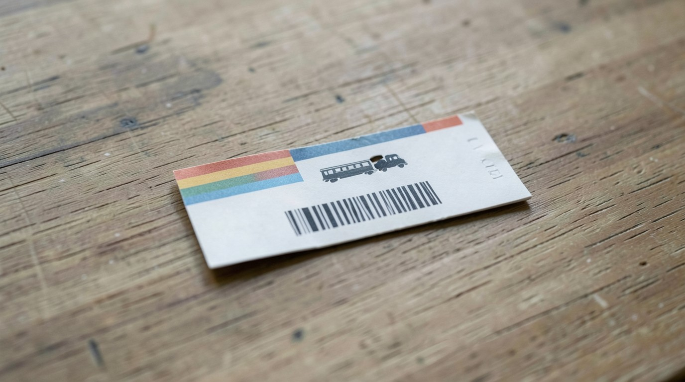
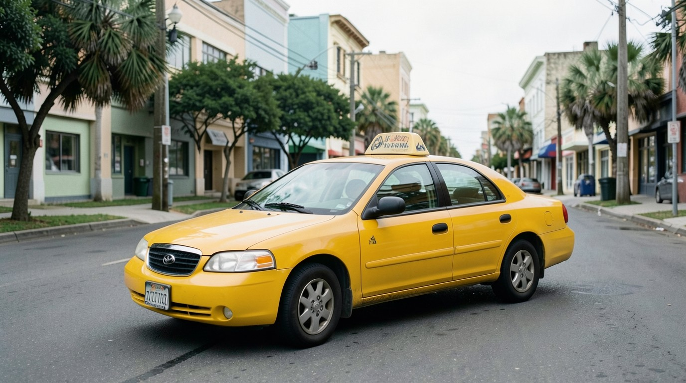
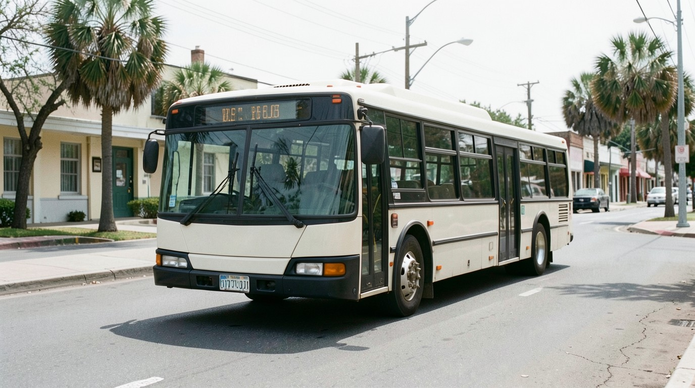
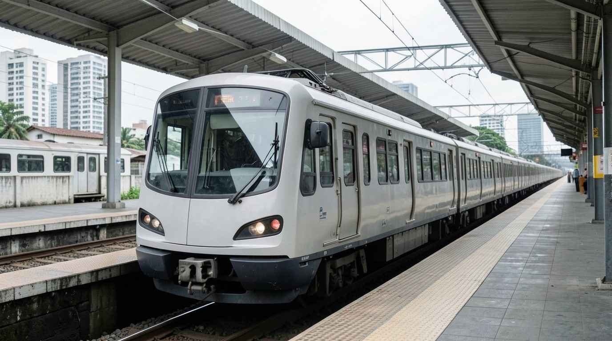

Día 1. Escucha
- Mira la imagen y escucha el diálogo una vez, sin leer.
- Escucha cada palabra y elige el significado.
- Escucha otra vez y lee. Tapa el español; destápalo solo si lo necesitas.
Diálogo
Ana. The EXIT is on the left, next to the trains.
La salida (EXIT) está a la izquierda, al lado de los trenes.
Ana. Turn right at the EXIT. Take the bus at the bus stop, near the station.
En la salida, doble a la derecha. Tome el autobús en la parada, cerca de la estación.
Imágenes
Escucha las cuatro palabras. Para cada una, escribe la letra de la imagen.




Día 2. Estudia
En español dices «voy en bus». En inglés, con el transporte usas take: I take the bus. I take a taxi.
«A casa» es home, sin to: I go home.
El lugar: on the left, on the right.
No digas I go in the bus. No digas I go to home.
- Corrige: I go in the bus.
- Corrige: I go to home.
- Completa: I ___ the train. (tomo)
- Completa: The bus stop is ___ the right.
- Elige: (a) I go home at night. (b) I go to home at night.
- Corrige: I go in taxi to the station.
Las respuestas están en la clave.
Falso amigo: EXIT
EXIT en un letrero es «salida». No es «éxito»: éxito en inglés es otra palabra, y no la necesitas en este libro.
The EXIT is on the left, next to the trains.
s + consonant: stop, station
En español ninguna palabra empieza con s + consonante, así que decimos «estop». En inglés no hay e delante: stop, station, street. Empieza directo con la s, como un silbido: sss-top.
Escucha. Repite. Grábate y escucha tu grabación una vez. Repite con el modelo.
Take the bus at the bus stop, near the station.
Tarjetas
Di la palabra en español. Después toca la tarjeta para ver la respuesta y un ejemplo. Copia las tarjetas en papel.
bus
autobús
Take the bus at the bus stop, near the station.
train
tren
The EXIT is on the left, next to the trains.
taxi
taxi
There are taxis next to the bus stop.
stop
parada
And where is the bus stop?
station
estación
Take the bus at the bus stop, near the station.
ticket
boleto
How much is a bus ticket?
left
izquierda
The EXIT is on the left, next to the trains.
right
derecha
Turn right at the EXIT.
near
cerca
Take the bus at the bus stop, near the station.
home
casa (a casa)
At night, I take a taxi home.
EXIT
salida
The EXIT is on the left, next to the trains.
Día 3. Habla y escribe
Tu ruta
Primero lee la ruta de Ana y escúchala. Después escribe tu ruta real, de tu casa a un lugar al que vas, y cuéntasela a Luis con la pista de pausas.
Home → the train station
I go to the bus stop near my home.
I take the bus to the station.
At the station, I take the train.
At night, I take a taxi home.
I go to the bus stop near my home. I take the bus to the station. I take the train. At night, I take a taxi home.
Conversación con Luis
Luis pregunta. Suena un tono. Tú respondes en el silencio. Después Ana responde.
- Primera vez: responde como Ana.
- Segunda vez: responde sobre ti. Grábate con el teléfono.
- Luis. Where is the bus stop?
Ana. It is near my home, on my street. - Luis. Do you take the bus?
Ana. Yes. I take the bus to the station. - Luis. Do you take the train?
Ana. Yes. I take the train at the station. - Luis. Where is the EXIT?
Ana. The EXIT is on the right. - Luis. How much is a train ticket?
Ana. It is 2 dollars. - Luis. Do you take a taxi home?
Ana. Yes. At night, I take a taxi home.
Ahora tú
Home → ________
I go to ________ near my home.
I take the ________ to ________.
At ________, I ________.
At night, I ________ home.
Día 4. Otra vez, solo en inglés
Lee el diálogo una vez. Después habla con el audio al mismo tiempo.
Sam. Excuse me. Where is the exit, please?
Ana. The EXIT is on the left, next to the trains.
Sam. Thank you. And where is the bus stop?
Ana. Turn right at the EXIT. Take the bus at the bus stop, near the station.
Sam. And a taxi?
Ana. There are taxis next to the bus stop.
Sam. How much is a bus ticket?
Ana. It is 1 dollar.
Sam. Thank you. Goodbye.
Ana. Goodbye.
Lectura
Lee el texto dos veces. La segunda vez, lee con el audio.
Luis goes to work at 7 in the morning. He takes the bus at the stop near his home. The bus goes to the train station. At the station, he takes the train. A train ticket is 2 dollars. His work is near the station: he turns left at the EXIT. At night, Luis takes a taxi home. The taxi is 5 dollars.
¿Puedo hacerlo?
I can ask where a place is and follow simple directions.
Corrige: I go in the bus. At night, I go to home.
Si todavía no, repite el día 2 (take the bus; go home, sin to). Después repite el día 3 con la pista de pausas.